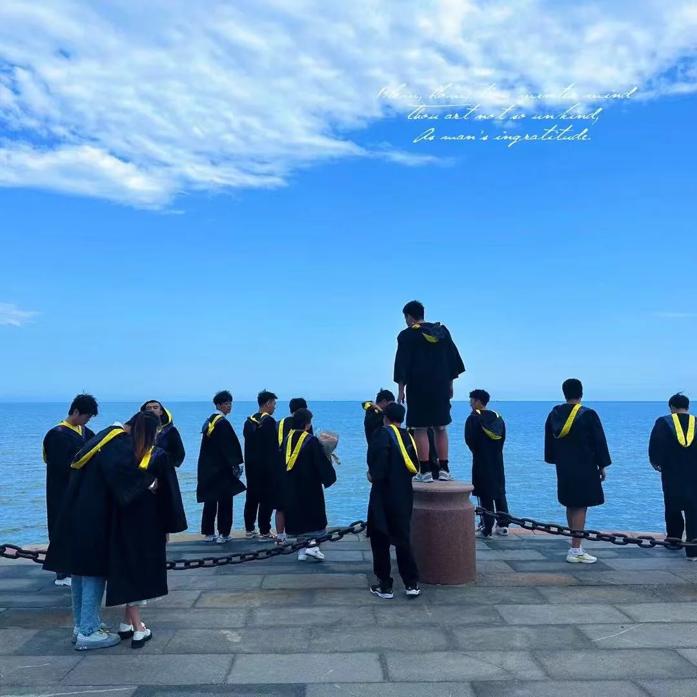
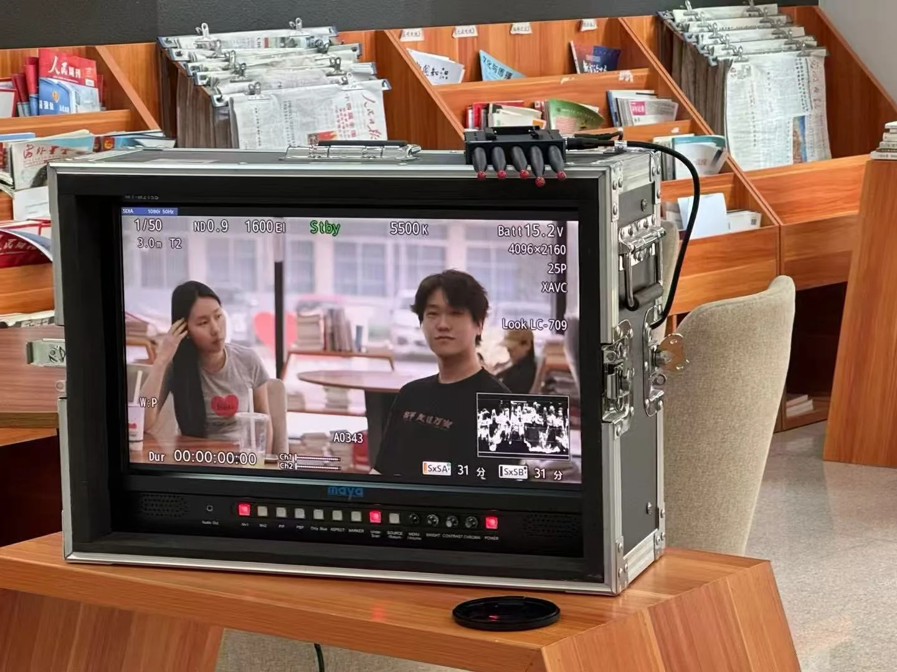

读书那点事
01
哈尔滨理工大学 · 软件工程
本科 · 特等奖学金 · 三好学生 · 校艺术团团长
本科在哈尔滨理工大学读软件工程，研究生跑到了广西大学读新闻与传播——听起来有点离谱。但从大二开始我就隐隐觉得，未来属于那种既是一个 builder，又是一个 influencer的人。
产品泛滥的时代，注意力变成了稀缺资源。营销、分发、品牌会取代单纯的产品和技术成为壁垒，讲故事和 user community 越来越重要。而另一边，有活人感的内容正在凸显优势——千篇一律的模板化生产会被淘汰，真实、有温度的表达反而稀缺。
所以我想跨考去学传播。软件工程的底子让我能看懂技术、能跟开发对话；而新闻传播的训练，能让我学会把好东西讲给对的人听。

本科毕业 · 海边

和兄弟们的毕业照
02
中国传媒大学 · 跨考
差 0.1 分 · 一场遗憾的折返
第一年跨考中传，准备了大半年，最后差 0.1 分过线。0.1 分——大概就是一个选择题的距离。然后是漫长的调剂煎熬，每天刷系统、等电话、被拒绝，那种感觉像是站在站台上看着一列列火车开走，手里攥着一张差一点点就能上车的票。
校园里大路两旁，未必只有一排排白杨。
遗憾会让你鼓足勇气，快速奔跑，成为自己的白杨。
遗憾会让你鼓足勇气，快速奔跑，成为自己的白杨。
后来我及时调整了方向：既然学历不是唯一赛道，那就卷实习、卷能力。从芒果 TV 开始，一段接一段地攒实战经验，把每一段经历都当成一块砖，自己给自己铺路。回头看，那 0.1 分可能是我人生里最值的一笔学费——它逼我提前想清楚了"不靠学历靠实力"这条路。

中传校园 · "校园里有一排年轻的白杨"
03
广西大学 · 新闻与传播
硕士在读 · 一等/二等奖学金 / 研会公关实践部部长
最终调剂到了广西大学新闻与传播学院读硕士。在这里我系统学习了传播学理论、内容生产方法论，同时没闲着——一边上课一边卷实习，把学到的理论立刻拿去实战检验。从芒果 TV 到快手到京东到即梦，每一段实习都在验证课堂上那些"听起来很虚"的概念。
研究生会的经历也让我学会了怎么跟不同的人打交道、怎么组织一场活动从零到落地。这些"软技能"和软件工程的"硬技能"加在一起，恰好是我想成为的那种人。

硕士阶段 · 图书馆里的拍摄现场